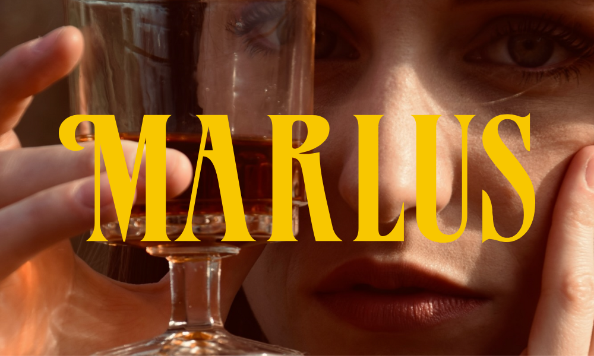
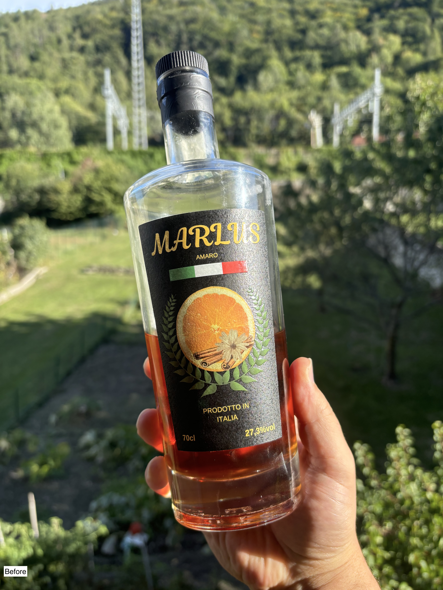
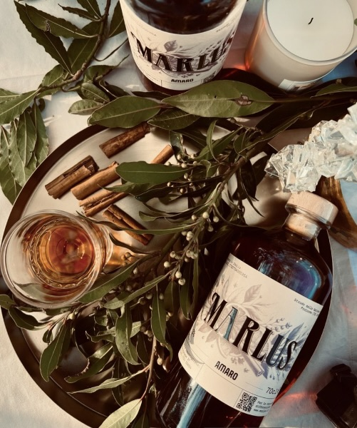
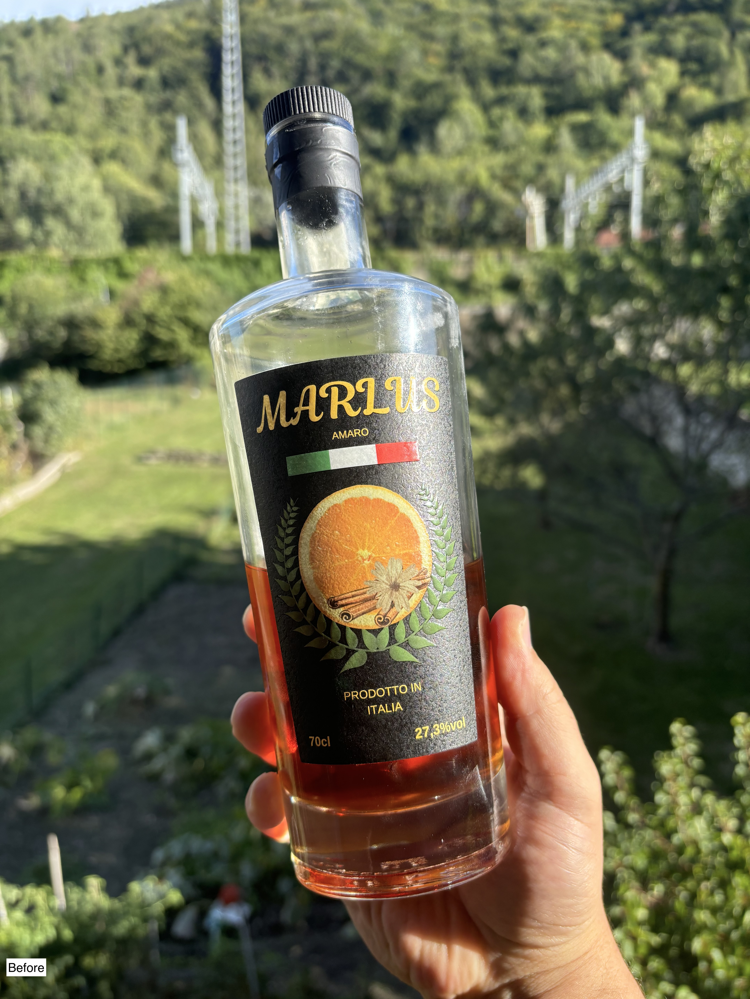
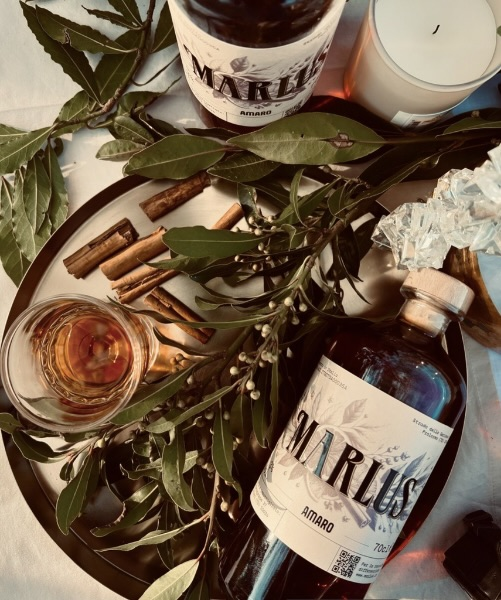
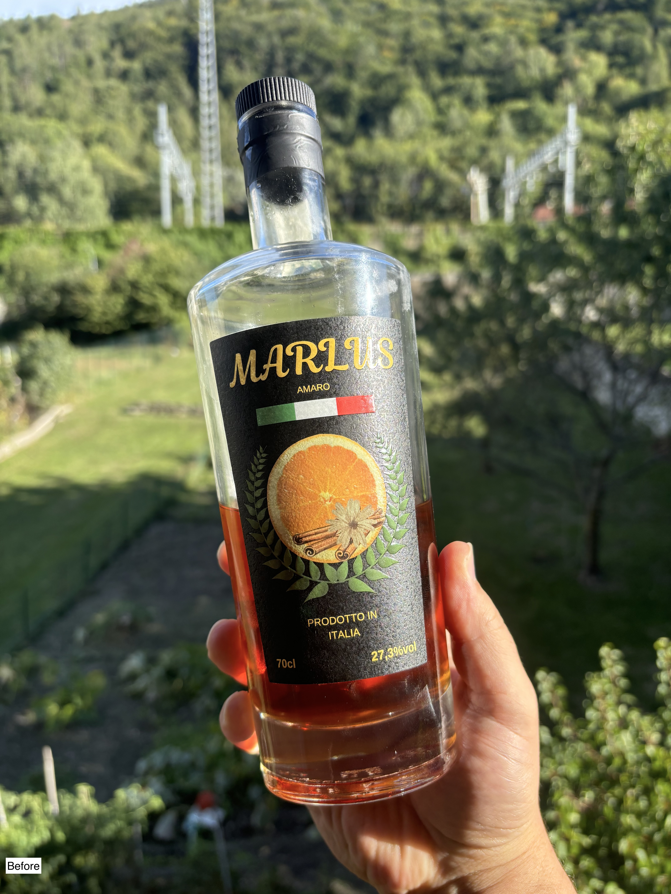
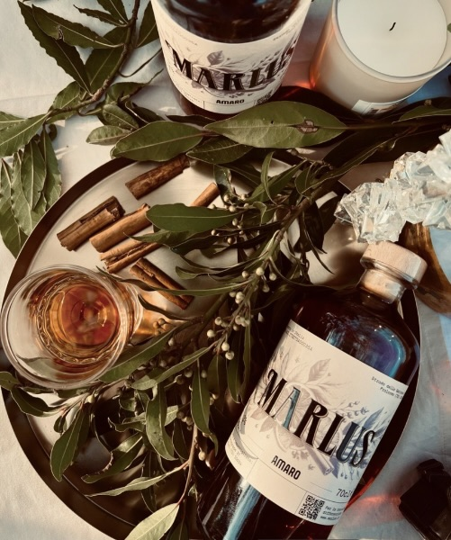

Amaro Màrlus
Revamped branding for an emerging amaro producer in the Turin area.
A classic touch with colors reflecting the spirit of the drink, and a typeface inspired by vintage local bottles.
2023

 




